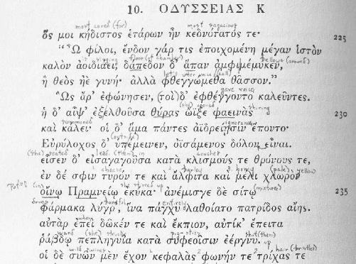

One day in Athens can change everything.
It took weeks to arrange the meeting in September 2018 with Dr. Polyxeni Adam-Veleni, head of the General Directorate of Antiquities and Cultural Heritage in Greece. When it comes to the legacy of the civilization that shaped the modern world, she is the boss. The director is responsible for making sure nobody forgets about Ancient Greece, which has to compete not only with more practical subjects in universities across America and around the world, but also with the development of contemporary Greece, a country where ruins and relics can often get in the way of economic progress. An archaeologist and scholar herself, Adam-Veleni is the rare academic whose very job demands a daily balancing act, safeguarding the past while promoting the future. So if anyone could opine on Ruck’s scholarship with common sense and a level head, it was her.
I called the director’s office every day to reassure her staff I wasn’t a crazy person, and that I had a matter of critical importance to discuss. We went through the same routine a dozen or so times before the appointment was booked. Adam-Veleni’s assistant would politely inquire about the university or government institution I was representing. When I couldn’t provide one, her tone would become uneasy, bordering on disbelief. “I’d like to discuss the Mysteries of Eleusis,” I would say into the staticky line connecting Washington, D.C., and Athens. It’s like calling the director of the CIA’s office and saying you had a few questions about the Kennedy assassination you’d like to have cleared up.
After a series of similar phone calls and very earnest emails, however, I finally got the green light on the day I was boarding the Lufthansa flight to Athens. One sleepless overnight flight and a short nap later, I roll up in a taxi to the dilapidated office building housing the Ministry of Culture and Sports, just opposite the National Archaeological Museum. Security sends me to Adam-Veleni’s corner office on the fourth floor. The director sweeps in from a board meeting that is taking place on the ground floor. She quickly explains how the Ministry’s secretary-general recently placed her in charge of all the antiquities in Greece, which meant the Directorate of Museums, with its 242 archaeological museums, now answered directly to her. As did the country’s fifty-three regional offices, which run the ground operations for each of Greece’s ongoing archaeological digs.
“So you’re busy?” I anticipate.
“I’m very busy.” Adam-Veleni laughs. “Here, there are antiquities everywhere. There is great fear of the archaeologist in Greece, because if a developer wants to build something—like the metro, for example—they have to pay for the excavation first, which could last years. And cost millions of dollars. It’s really quite expensive. But it’s our duty to protect the antiquities and to show them to people.”
With the ice broken, and the segue provided, I ask the director about the recent exhibition at the stunningly modern Acropolis Museum, ten minutes to the south of us. I had just missed a show there called Eleusis: The Great Mysteries, but the museum’s website still featured a page explaining the choice to host it. “The Museum’s goal is to present unusual subjects that will intrigue the current visitor and at the same time urge him to visit the places the exhibits originated from.”1
“Why would one of your museums put on an exhibition like this?” I ask. “Is it just a historical exercise, for cultural preservation, or do you get the sense from your colleagues that the mystery is still alive? This was the religion that spoke to some of the greatest minds that this country, maybe the world, ever produced. And yet, we have no idea why. Even after all these years. Aside from the prohibition on speaking out, and all the shadows and secrecy, it seems like we’ve missed something in translation.”
“Yes, we have. Thanks to Christianity,” the director interrupts me with a total curveball. “That’s the reason. It’s that simple. It’s nothing else. They changed everything.”
This level of candor about Christianity’s role in the death of classical civilization is rarely voiced back home, even among academics. For American classicists, Christianity is the elephant in the room. The clash of religions that took place at the end of the fourth century AD is perfectly accepted as part of the history of Western civilization, but it can be considered impolite to state the obvious. There’s something about that reluctance to choose between the Constitution and the Bible—and wistful claims that the United States was founded as a Christian nation—that politicizes an undeniable reality. So instead of offending the theologians, American classicists generally retreat to their corner, leaving “a very extensive part of the world’s history,” as Deferrari put it back in 1918, “very much neglected by the very ones best able to investigate it.” In Adam-Veleni I’ve found a kindred spirit willing to talk about events that weren’t openly discussed in my entire time at university. As I try to think of a follow-up question, she launches headfirst, and unprompted, into two examples of what she has in mind.
“The destruction of the Great Library of Alexandria,” she goes on. “This is a great loss, the greatest in the world, in my opinion. Things would be so different if we had all those sources, all those ancient texts. We have so little from antiquity.”
In AD 392, the same year Emperor Theodosius outlawed the Mysteries, Bishop Theophilus of Alexandria led a rabid mob into “the most beautiful building in the world” and razed it to the ground.2 It’s unclear if Theophilus (Greek for “beloved of God”) and the Christians he urged on were really after the glimmering statue of the Greco-Egyptian god Serapis, or the vast library collection that was cached in his temple precinct. Either way, Catherine Nixey’s The Darkening Age: The Christian Destruction of the Classical World—which framed this investigation in the first chapter—lends exquisite detail to the annihilation of the “world’s first public library” and its “hundreds of thousands of volumes.”
The Christians “roared with delight” as a “double-headed axe” split Serapis’s face. The body of the pagan statue was then barbecued in the central amphitheater as a form of “public humiliation”—“burned to ashes before the eyes of the Alexandria which had worshipped him.” Insatiate, the “warlike” mercenaries for Jesus then tore the temple apart stone by stone, “toppling the immense marble columns, causing the walls themselves to collapse.”3 We don’t know exactly what happened to the contents of the Great Library, but they were never seen again. As Nixey concludes,
A war against pagan temples was also a war against books that had all too often been stored inside them for safekeeping—a concept that from now on could only be recalled with irony. If they [the books in the Great Library] were burned, then this was a significant moment in what [Italian scholar Luciano] Canfora has called “the melancholy experiences of the war waged by Christianity against the old culture and its sanctuaries: which meant, against the libraries.”
After the destruction of the temple, the Christian rampage tore across town, attacking twenty-five hundred additional “shrines, temples and religious sites.”4 In Alexandria, as elsewhere, this kind of wanton mayhem was part of a wider campaign of spiritual—what today we might call “psychological”—warfare. Theophilus would replace the ancient temple of Serapis with a church to house some relics of John the Baptist that had been procured from Palestine. It was a “consciously planned provocation.” The goal, “in unmistakable fashion,” was to claim exclusive possession of “the physical and symbolic fabric of the city and capital of Egypt,” which “now belonged to Christ and the God of the Christians.”5 Eunapius, a Greek historian of the era, said the Christians “boasted that they had overcome the gods, and reckoned their sacrilege and impiety a thing to glory in.”6
The director and I are talking about events of the distant past, but it’s hard not to make the obvious modern-day connection. In recent years, whenever ISIS henchmen ripped through an ancient Assyrian site or destroyed priceless artifacts in Iraq’s Mosul Museum, Western pundits would hit the airwaves to bemoan the loss of cultural heritage. Our collective patrimony is at stake, they would say. “With a clean slate,” one commentator opined, “ISIS seeks to present to future generations a new version of history, in which its binary narrative of ISIS heroes fighting evil will be able to flourish. Obliterating historic sites is an attempt to create a blank canvas for ISIS to build on: a new beginning.”7
How different were the motives of the religious zealots in Alexandria, or Eleusis?
Adam-Veleni then cites her second example: the unbelievable amount of literature that has gone missing. “Just look at the theatrical tragedies we have. Only thirty-three and a half,” she tells me. “But the production was much, much higher than that.”
Sure enough, only nineteen of seventy-seven plays attributed to Euripides have survived. For Aeschylus, who was once prosecuted for revealing the Eleusinian secrets, it’s seven out of ninety-nine. For the other Eleusinian mystic Sophocles, it’s only another seven out of more than one hundred twenty. It’s unknown if Euripides was initiated, but his plays contain tiny, possibly hallucinogenic details about the magical night in Eleusis.8 Imagine how many other clues the playwrights may have embedded into the rest of their work? All of it, and countless other records from antiquity, just scrubbed from memory. The Christians can’t be blamed for all of it, of course, but scholars estimate that “perhaps only one percent” of all classical literature has survived to the present day.9 Think about that. Absolutely everything we know about the ancient world is based on the tiniest fraction of its actual output. For centuries classicists have been trying to reassemble a million-piece jigsaw puzzle with what Ezra Pound once called “two gross of broken statues” and “a few thousand battered books.”10 No wonder Eleusis refuses to reveal her magic.
While the numbers sink in, I cut to the chase. I reach into my brown leather pouch and pull out my prized copy of The Road to Eleusis, the black sheep of the Classics estate. Assuming the director has never heard of it, I explain the gist of the forty-year-old hypothesis that the kukeon was the central, psychedelic secret of the Mysteries. I tell her that Wasson and Hofmann are now deceased. But that Ruck is still plugging away at Boston University, still convinced he’s right.
“Ruck … Ruck,” the director mumbles out loud to herself, drawing a blank. She shakes her head to signal that she has, in fact, never heard the name.
“Okay. But without getting into the details, does the idea itself strike you as strange? Is it offensive for Ruck to say that the founders of Western civilization were doing drugs? Would it bother you if, perhaps once in their lives, the Ancient Greeks drank a psychedelic potion to talk to Persephone … to communicate with God?”
“No, no, no,” the director quickly snaps, waving her hand in the air to dismiss the absurdity of the question. “Of course not!”
“But that seems to bother a lot of people.” I am immediately reminded of a recent conversation with the eminent Swiss classicist, Fritz Graf, at Ohio State University. I spent the summer hounding any Greek scholar who would give me the time of day. Graf was extremely considerate from the very beginning, even if he completely disagreed with the psychedelic hypothesis. His very first email to me in July 2018 contained the unforgettable phrase, “Just to be open: I regard the Wasson-Ruck theory as rather farfetched.”11
Despite that, Graf consented to a phone call, a rare opportunity to drink from the fountain of Central European wisdom that dominates the Classics. Graf earned his Ph.D. from the University of Zurich under the watchful eye of the German-born Walter Burkert, who is considered somewhat of a demigod in the field. In 1977, one year before the publication of The Road to Eleusis, he wrote Griechische Religion der archaischen und klassischen Epoche, published in English by Harvard University Press in 1985 as Greek Religion. It’s the the gold standard for any would-be classicist. I had to read it twice. It’s because of prowess like Burkert’s that no serious student spends much time learning Greek without a basic comprehension of German. Burkert died in 2015. So in many ways, speaking with his mentee was my personal audience with the old school at its best. When I asked why he found the relationship between Eleusis and psychedelics “rather farfetched,” Graf spoke slowly and deliberately to make sure I didn’t miss a syllable. “The main thing is … there’s not one shred of evidence in our sources.”
Sitting with Adam-Veleni in Athens, however, that kind of skepticism is nowhere to be found. She skips right over the controversy: “In fact, I think they used drugs. Because they wanted to have, eh … how do you say, illusions.”
“Visions?” I suggest.
“Visions! Yes. In antiquity, this was not so strange. For example, what is the name of this plant, the one with the morphine?”
“Morphine? Oh, the poppy.”
“Yes, the poppy,” the director repeats. “You see the poppy everywhere. And then there’s Delphi. They say the Pythia has eaten leaves from what? From the laurel. This too provoked visions. Because it has oily leaves. And the oil is, in a way, a drug.”
To this day the debate rages on about what inspired the famous prophecies at the Oracle of Delphi, about a hundred miles northwest of this office. What’s certain is that women ran the show, just as they did in Eleusis. There would be three Pythias, or high priestesses, at any given time, each having dedicated her life to serving as a channel or mouthpiece for the god Apollo. The petitioners gathered around the Pythia to learn their fate. The state constitutions of Sparta and Athens were submitted for her approval by Lycurgus and Cleisthenes, respectively.12 In Sophocles’s play, it was the Pythia who delivered the bad news to Oedipus that he would kill his father and marry his mother. Walter Burkert includes this fascinating depiction in Greek Religion:
After a bath in the Castalian spring and after the preliminary sacrifice of a goat, she enters the temple, which is fumigated with barley meal and laurel leaves on the ever-burning hestia [Greek for “hearth”], and descends into the adyton, the sunken area at the end of the temple interior. There is where the Omphalos [Greek for “navel,” it was the rounded stone thought to be the center of the world, allowing direct communication with the gods] and where, over a round, well-like opening in the ground, the tripod cauldron is set up.… Seated over the chasm, enveloped by the rising vapours, and shaking a freshly cut bay branch, she falls into a trance.” 13
A number of theories have been proposed to explain how the Pythias’ trance was induced. Burkert agreed with the 1948 edition of the Oxford Classical Dictionary, noting the fact that “volcanic fumes [rising] up from the earth has been disproved geologically; the ecstasy is self-induced.”14 He may have been one damn fine classicist, but Burkert was no earth scientist. While past geologists attempted to disprove the “rising vapours” theory, a fresh, interdisciplinary team came along in 2002 with two decades’ worth of evidence. The geologist, archaeologist, chemist, and toxicologist showed that the priestesses of Apollo were likely under the influence of ethylene—a “sweet-smelling gas once used as an anesthetic” that can produce feelings of “aloof euphoria.”15
In 1981 two hidden geological faults were serendipitously uncovered when the Greek government decided to carve into the hillside east of Delphi to make room for tour buses. In 1996, long after Burkert’s Greek Religion had been published, the new team finally surveyed the site, revealing that the sanctuary’s “underlying strata were bituminous limestone containing up to twenty percent blackish oils.”16 It wasn’t volcanism, but petrochemicals like ethylene that could do the job. The psychoactive gas would be released into the temple ground waters whenever the bitumen was heated by rather “simple geologic action.”17 In 2000 the team’s toxicologist, Dr. Henry A. Spiller, lent further support to the theory after pharmacological analysis of a bedrock sample from the site. To him the effects of ethylene were well known: “In the first stages, it produces disembodied euphoria, an altered mental status and a pleasant sensation. It’s what street people would call getting high. The greater the dose, the deeper you go.”18
All this just to demonstrate three simple points. First, the Classics are at their best when the experts and specialists from a wide range of disciplines are able to converge on one thorny problem. That million-piece jigsaw puzzle needs all the help it can get. Second, as we saw in the last chapter with Heinrich Schliemann, Milman Parry, and Michael Ventris, it’s not always the seasoned pros who get it right. New finds and new data are always just around the corner, and we never know where they’re going to turn up next. And third, when it comes to drugs, classicists are simply out of their depth. Aside from the ethylene, there’s no ruling out the “barley meal” or “laurel leaves” as additional tools for causing or enhancing the Pythias’ altered state of consciousness. The plants were long associated with Delphi by Plutarch and Aeschylus. In a total blind spot, however, a scholar as formidable as Burkert fails to comment on the potentially psychoactive properties of Ancient Greek “laurel” the way Adam-Veleni just did—off the top of her head, no less.19
Not that Burkert wasn’t generally open to the idea, by the way. On the immediately preceding page of Greek Religion, when discussing the ghostly visions reported at the Oracle of the Dead at Ephyra, he speculates that “perhaps the eating of certain kinds of beans had a hallucinogenic effect.”20 I like that word “perhaps”—a far cry from “the ecstasy is [emphasis mine] self-induced.” That kind of absolutism can stifle creative solutions that bring all the evidence to bear. With that in mind, perhaps the thick, smoky incense of “barley meal” is yet another secret indication to initiates, like the one spotted by Wasson and Hofmann in the Hymn to Demeter. The LSD- and psilocybin-like magic of the relatively common ergot fungus might not survive the heat, but a witchy plant or herb that wound up in the barley meal could certainly make for hallucinogenic incense. Or perhaps it really was the laurel leaves that did the trick.
Speculation aside, so much remains unknown about drugs in the ancient world. Rigorous scholarship in this field is still largely absent from the Classics curriculum, and even considered taboo. One of the only classicists to pick up where Ruck left off is Dr. David Hillman, who also sports a master’s degree in bacteriology. In order to complete his Ph.D. on the use of medicinal drugs in the Roman Republic, Hillman was instructed by his thesis adviser to delete all references to the recreational use of narcotics, stimulants, and psychedelics in antiquity. Hillman obeyed, later publishing his controversial findings in The Chemical Muse: Drug Use and the Roots of Western Civilization in 2008. The London Times referred to his study as “the last wild frontier of classical studies.”
In personal correspondence Hillman explained that the medical and pharmaceutical texts that contain the evidence for ancient drugs are simply too complex for classicists, as they require a working knowledge of “biology, botany, anatomy, physiology, pathology, epidemiology, and pharmacology.” As an example, Hillman cited Galen, the personal physician to Marcus Aurelius who wrote extensively about drugs. Born to Greek parents in Pergamon around AD 130, Galen’s prolific output in Greek guided the practice of Western medicine up through the American Civil War, and was especially influential in the Byzantine Empire and Islamic world.21 Despite the fact that there are more surviving works of Galen than of Homer, Pindar, Herodotus, Sophocles, Aristophanes, Euripides, Plato, and Aristotle combined, none of his pharmaceutical treatises has ever been translated into English.22
The blind spot that affected Burkert, and continues to plague most classicists to this day, doesn’t seem to have clouded Director Adam-Veleni’s thinking. When I ask why she believes drugs were involved at Eleusis or Delphi, she quips, “I’m Greek! It’s common knowledge this.”
“So it’s not that controversial here?” I think of all the German and Swiss eyes that would be rolling if they could hear this. Aside from Albert Hofmann’s, of course.
“No, not at all. Here, it’s very natural.”
Just then, the director’s cell phone rings, and she attends to some urgent business. For the first time since we sat down, I remember where I am, and who I’m talking to. I deem it best to let Adam-Veleni get back to preserving the antiquities of the oldest cities in Europe, instead of answering random questions from a random American. But not without a parting gift of poetry.
While the director is chattering away at lightning speed in modern Greek, I reach back into my pouch and fish out my Homer from the plastic freezer bag that sheathes it. That Ancient Greek edition of The Odyssey with the baby blue jacket, first published by Oxford University Press in 1917. The only non-Greek letters in the entire book are the copyright page, in English, and the introduction by Thomas W. Allen, composed in Latin for no reason whatsoever. That’s just how they did it in the glory days. There was no way I was going to Athens without my college textbook. I had been waiting too long to discuss a clue that I noticed in the Greek almost twenty years ago. And the director had just provided the long-awaited segue by referring to the use of drugs in antiquity as something that is “common knowledge” and “natural.” Something that, perhaps, had been there from the very beginning. Something so ingrained in the way religion used to be practiced that it makes little sense to question, despite the unnatural bias that twenty-first-century American classicists and historians have about drugs.
I flipped The Odyssey open to Book 10, where the witches of Eleusis and Delphi would have found their idol, the rock star sorceress who started it all. Widely feared and respected for her encyclopedic knowledge of plants and herbs, the goddess Circe gets a leading role in the oldest surviving work of Western literature. A story that Milman Parry proved to be the written legacy of a deeper, oral tradition that stretched back long before the eighth or seventh centuries BC (the conventional dating for Homer). After a close call with the giant Lastrygonians, Odysseus and his crew wash up on the mythological island of Aeaea—which, don’t worry, no classicist knows how to pronounce either. Circe drugs the hero’s men and turns them into pigs, so she can have her way with Odysseus. With a little help from the god Hermes, who supplies an herbal antidote to shield the mere mortal, Odysseus manages to beat Circe at her own game of hocus-pocus. Impervious to her charms, he subdues the enchantress, releasing his friends from the wicked spell. For kicks, Odysseus spends a year on Aeaea as Circe’s lover, drinking “sweet wine” with his mates.
Like the Hymn to Demeter, Book 10 of The Odyssey contains a recipe. Homer reveals the contents of the elixir that Circe concocted to make swine of the men, a key piece of evidence cited by Ruck in The Road to Eleusis. The passage had always intrigued me. While preparing for class one day back in college, I had scribbled the word “potion” into the margin of the Ancient Greek text. My minuscule handwriting was an early suspicion that these few lines of poetry had something to do not only with Eleusis, but also with the bigger puzzle about the origins of religion in general. As the director wraps up her call, I alert her to a little-known line of research that implicates Ancient Greece in a web of drugs that may have once connected the entire ancient world.

A page from the author’s college textbook. In this seminal passage of Ancient Greek from Book X of Homer’s Odyssey, the witch Circe uses her drugs to transform Odysseus’s men into pigs. Scribbled in 1999, the word “potion” is still visible in the left-hand margin.
“When you say ‘natural’ … this idea of drugs being ‘natural.’”
“Yes, for us it’s so familiar,” Adam-Veleni adds.
“Well, I think it might be ‘natural’ or ‘familiar,’ because it comes from the foundational text of Western civilization. Circe mixing the pharmaka.”
“Yes. Pharmaka … drugs,” she chimes in, translating the Greek word φάρμακα that gave us the English word “pharmacy.” As I pass her the distinct Oxford edition, the director scrunches her eyebrows, “So you speak Ancient Greek?!”
“Have a look at line 290 where Homer mentions the pharmaka. He even uses the noun kukeo for the ‘mixed potion’ that Circe uses to turn the men into pigs. Just like the kukeon from Eleusis.”
The director knows exactly which passage I’m referring to and begins reading the ancient hexameter out loud. The music of the language transports me to younger days. In English, Hermes’s classic warning to Odysseus goes like this: “she [Circe] will mix thee a potion (kukeo), and cast drugs (pharmaka) into the food.” I ask the director to flip back another page, just to the right of my one-word note to self, “potion.” She examines the fresh ingredients of Circe’s kukeon embedded in lines 233 to 236.
There Homer tells us the Grand High Witch “mixed” (anemisge/ἀνέμισγε) the “evil drugs” (pharmaka lugra/φάρμακα λύγρ᾿) into the men’s food, after having “stirred up” or “mixed up” a special potion for the occasion. The Greek verb ekuka (ἐκύκα) is used—from the same root as kukeon. That potion consists of cheese, barley, honey, and Pramnian wine (a dry, strong wine from the Greek island of Ikaria).23 There’s that barley again. Perhaps a significant clue, I thought, even a couple decades ago. In the process of reading The Road to Eleusis, I discovered Ruck’s reference to a paper entitled “Let Us Now Praise Famous Grains,” published in the Proceedings of the American Philosophical Society in February 1978 by Calvert Watkins. It immediately caught my attention because Watkins, Professor Emeritus of Linguistics and Classics at Harvard, had popped up in my Sanskrit studies. I hadn’t known he was working on Eleusis as well.
Watkins’s paper makes a brilliant case for the true origin of Circe’s magic. Although it’s virtually unreadable for nonspecialists, the “all-knowing” scholar, who died in 2013 a “towering figure,” marshals an artillery of obscure comparative linguistic evidence across no fewer than twelve Indo-European languages.24 Twelve! All in an effort to demonstrate why this and other passages from The Iliad and The Odyssey match, with “exact correspondence,” the core features of a well-documented ritual from ancient India.25 A ritual that certainly predates Eleusis and, in Watkins’s opinion, influenced both Demeter’s actual kukeon used in the Mysteries and Circe’s mythical kukeon as portrayed by Homer.
The mysterious lost tongue that connects India to Greece is known as Proto-Indo-European. Its exact homeland remains unknown. As it transformed over time and distance, however, the language retained certain core links in vocabulary and grammar to its original source. This uncanny ability of Proto-Indo-European to adapt to its environment made Indo-European “the most successful family of languages in history,” one or another of which is natively spoken by almost half the planet today.26 On the western front the Indo-Europeans would spawn the Baltic, Slavic, Germanic, Hellenic, Celtic, and Italic languages, which gave the ancient world Greek and Latin. Nowadays that branch of the family tree includes everything from Russian and German to Spanish and English. Heading east from the Eurasian homeland, the same Indo-Europeans would mix with entirely different populations to produce the Indo-Iranian languages. Today those archaic roots have evolved into Hindi, Urdu, Bengali, Punjabi, and Persian. In classical antiquity the best-documented survivor of this eastern branch is the Sanskrit language that made its way across the Himalayas into India.
On my very first day of Sanskrit class as an undergraduate, I was introduced to the following quote from 1785 by the Anglo-Welsh philologist Sir William Jones:
The Sanskrit language, whatever be its antiquity, is of a wonderful structure; more perfect than the Greek, more copious than the Latin, and more exquisitely refined than either, yet bearing to both of them a stronger affinity, both in the roots of verbs and in the forms of grammar, than could possibly have been produced by accident; so strong indeed, that no philologer could examine them all three without believing them to have sprung from some common source, which, perhaps, no longer exists.
Sanskrit was a holy language with a mystical purpose, the earliest written example of which is the Rigveda, a collection of sacred hymns composed as early as 1700 BC. They may represent the oldest extant literature of any Indo-European language. If The Iliad and The Odyssey are the mother texts of Western civilization, then the Rigveda is our grandmother. And there we find the original “mixed potion,” a sacramental drink called soma (सोम). In the Rigveda, soma is both a plant and the god residing in the plant. Just like the kukeon of Circe and Demeter, the preparation of soma is often tied to the “female presence.”27 It is referred to as the “elixir of life.” And it is explicitly characterized as madira, the Sanskrit term that Watkins translates as “intoxicant” or “hallucinogenic.” One particularly memorable line from the Rigveda reads: “We have drunk soma and become immortal; we have attained the light, the gods discovered.”28
After surveying the linguistic data, Watkins concludes that the similarities between the soma ritual of the Rigveda and “the ritual act of communion of the Eleusinian mysteries, by women for women” cannot be mere coincidence—“just too striking for a fortuitous resemblance to be plausible.” And while the Circe passage above seems like a silly, little children’s story about witches and pigs, Homer is in fact “describing a religious ritual”—“a liturgical act of Indo-European date, identical with the soma ritual of Vedic India.”29 For the spiritual language of the Ancient Greeks and Indians to be so profoundly interconnected, Sir William Jones’s inkling about the “common source” of both Hellenic and Sanskrit must have been correct. Later on in this investigation, we will return to the hotly debated prehistoric origins of Proto-Indo-European, the mother tongue that seems to have introduced the religious use of drugs to both Greece and India, expanding outward over an ancient global triangle binding modern-day Iceland to Siberia to Sri Lanka. A secret pharmacology that somehow found its way into the subterranean catacombs we visit in Rome, now under the exclusive jurisdiction of the Vatican.
Is it possible that the linguistic success of Indo-European had something to do with this “religious ritual” or “liturgical act” that its speakers carried across the planet? If soma was undeniably “hallucinogenic,” perhaps the kukeon was as well? Wasson certainly thought so. And if he could identify the unknown species behind soma, the kukeon might fall into place as well. Instead of a plant, however, Wasson suggested the visionary Amanita muscaria mushroom as the grandmother of all psychedelic rituals. Before he teamed up with Hofmann and Ruck, the ethnomycologist published his own breakout study in 1968, Soma: Divine Mushroom of Immortality. Right or wrong about the Indian sacrament, it’s not the point. When Adam-Veleni says that the relationship between drugs and religion is “natural,” I think this is what she’s referring to. After all, soma and the kukeon have been around a hell of a lot longer than the War on Drugs.
The director agrees with me, and with the general thrust of Watkins’s inquiry into the origins of the Greek sacrament. But if I’m in search of the roots of the Mysteries, she tells me there is only one person who can really help my investigation. So just as I’m about to leave, the director gives me the personal contacts for her friend and colleague Kalliope Papangeli, the chief excavator of Eleusis for the past many decades. After weeks of trying and failing to get in touch with the elusive archaeologist, I finally have my connection.
The second I leave the director’s office, I stand at the corner of the National Archaeological Museum and call Papangeli’s cell phone three times, hoping for a miracle. I then send her a text, begging to meet before I have to fly back to Washington. I make my way to a cozy little wine bar called Oinoscent, only a couple of blocks from my apartment back in the Plaka district. As I’m downing my second glass of Limnio from the Kikones vineyard, named after the ancient wine-making tribe that Homer placed in Thrace, my pocket buzzes.
My rendezvous with Papangeli is set for the next morning in Eleusis.